La salle des légendes est un bâtiment disponible à prtir du niveau 70. Il permet d'améliorer des compétences (militaires et économiques), débloquer des bâtiments, des unités et engins. Les améliorations de compétences sont possibles en fonction du inveau du bâtiment, tandis que débloquer des bâtiments, des unités/engins et améliorer les unités/engins coûte (sceat/ducats impériaux/plâtre) et prend un certain temps. Certaines améliorations sont une condition pour aaccomplir certains succès. Monter la salle des légendes de un niveau permet d'avoir un point légendaire à dépenser en plus, jusqu'au niveau max de la salle des légendes (550).
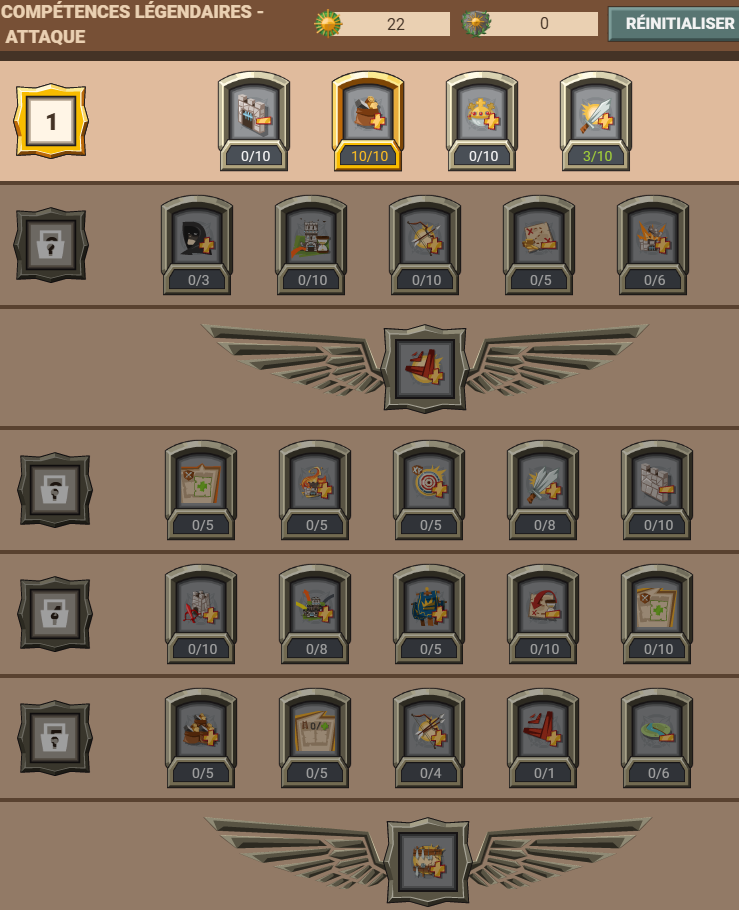
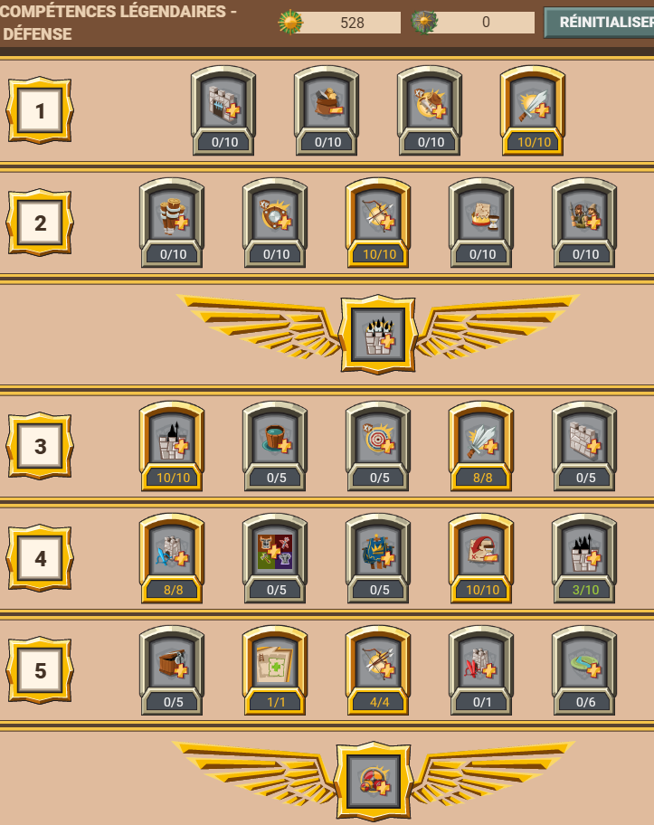
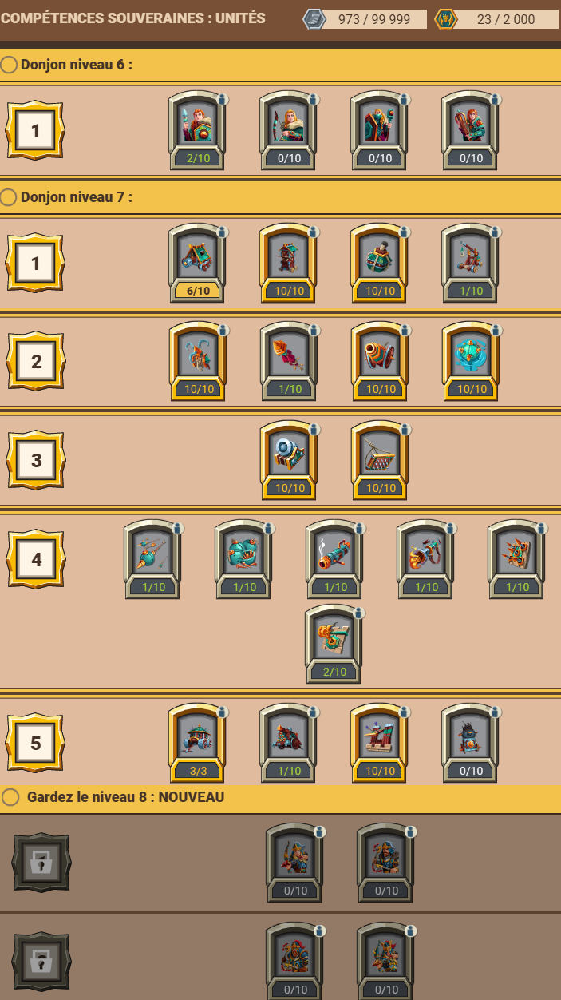
Cette section regroupe les bâtiments qui peuvent être recherchés depuis la salle des légendes. Ces bâtiments peuvent être débloqués moyennant un certain coût (sceat, ducats, plâtre...). Ces améliorations sont divisées en plusieurs niveaux de donjons : niveau 6, 7 et 8.
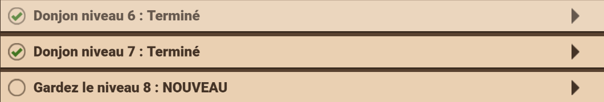
Le premier pallier est débloquer le donjon niveau 6, puis d'autres bâtiments ou amélioration de bâtiments existant.
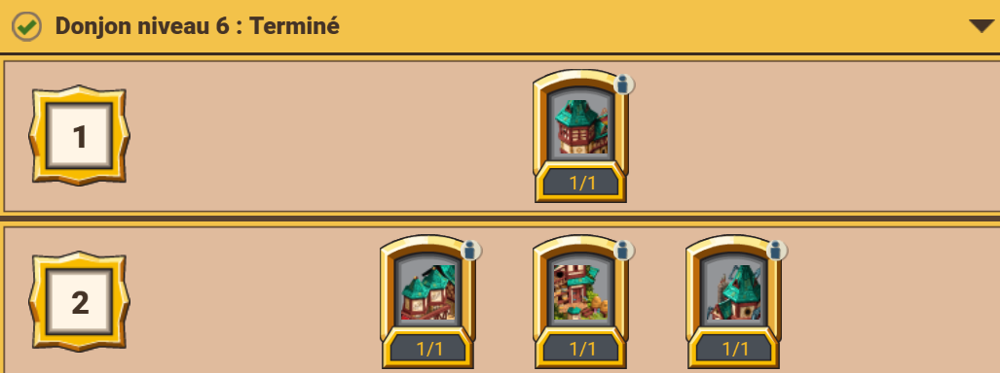
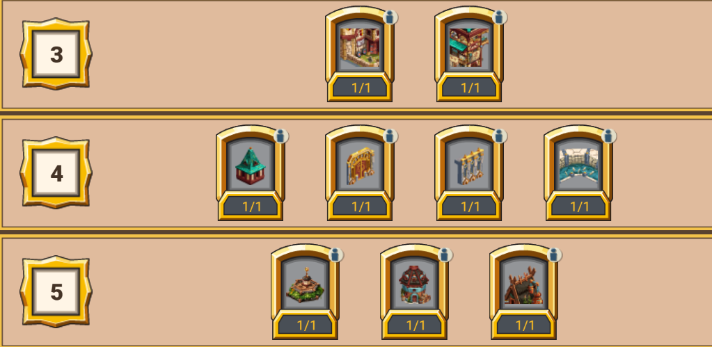
Plus précisemment :Premier pallier
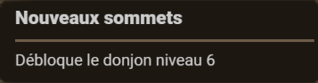
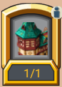
Deuxième pallier
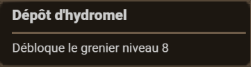
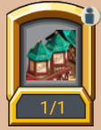
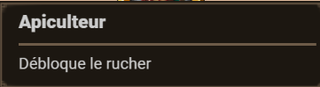
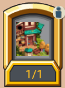
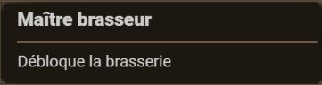
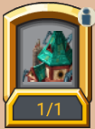
Troisième pallier
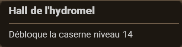
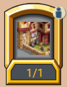
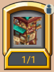
Quatrième pallier
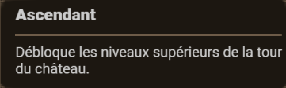
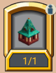
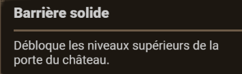
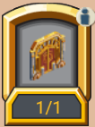
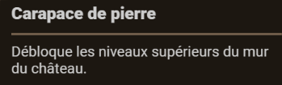
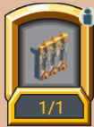
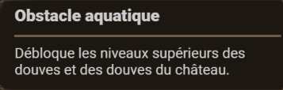
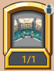
Cinquième pallier
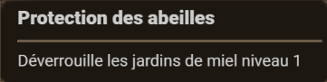
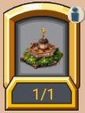
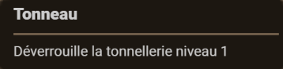
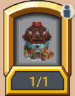
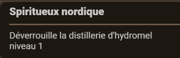
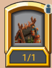